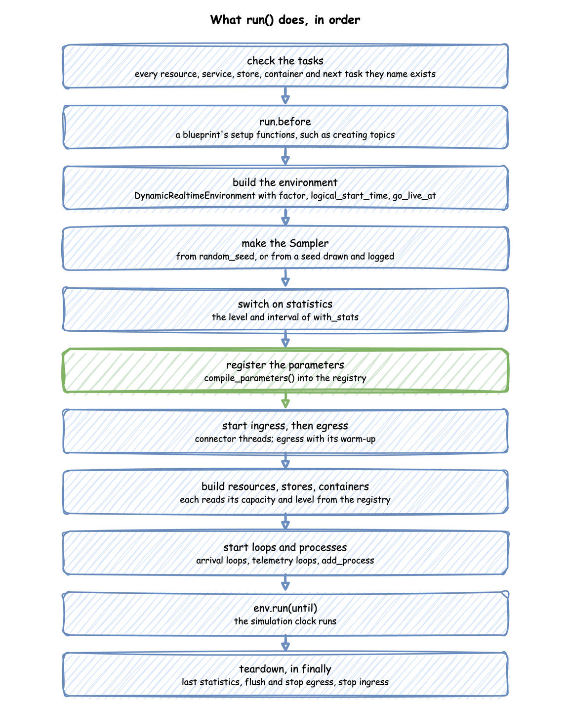
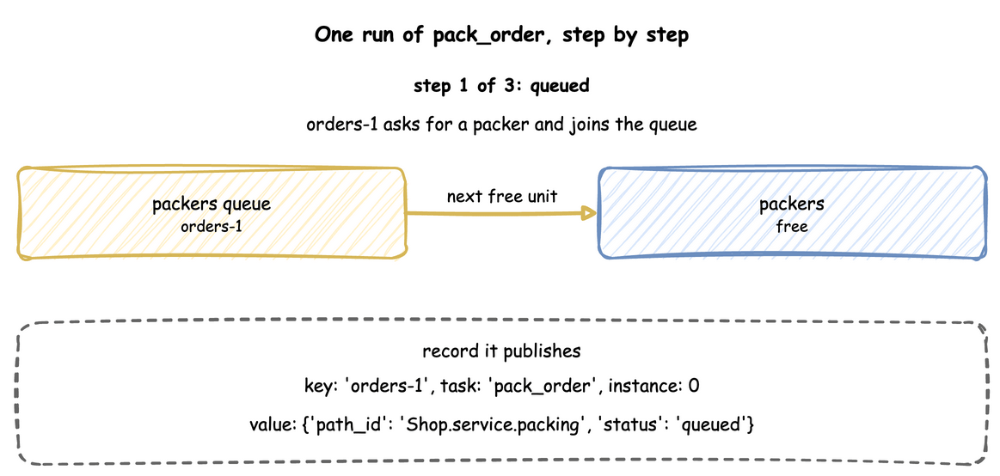

Tasks
A task is what one entity does: an order being packed, a return being logged. This page shows how to write a task, which keys a task has, how an order leaves the line, what a task does when it is interrupted, what run() does with tasks, and what a task does step by step. Processes shows work that does not belong to one entity.
What It Is
A task is a SimPy generator: a function that yields to wait. The builder and YAML write the common ones for you, and the low-level API writes them by hand. A task waits for what it needs, does its work for a sampled time, publishes an event at each step, and may lead to the next task.
How to Use It
A Task
A task with a service and a resource asks for a unit of the resource, holds it for a time drawn from the service, and releases it. A task with neither takes no time and holds nothing: it publishes its payload at once. Such a task suits a step that only records an event, such as logging a return.
A payload mapping may hold generated fields. This task adds a delivery to the finished event, standard for nine orders in ten and express for the tenth:
The function is called with the task id and whatever the caller passes. It also receives entity, upstream and item by keyword when it declares a parameter of that name: the entity, what the previous task handed on, and what a store get took. A function that declares none of them is called without them.
A function that returns a Template gives the same generated fields as the YAML tab:
This is ordinary SimPy: packers.request() waits for a unit, env.timeout waits the service time, and leaving the with block releases the unit. The env.publish_event call at each step produces the records.
A task can also take from or add to a store or container (get, put), rank its requests (priority), and name the task that follows it (next). Stores and Containers, Units and Queues and Task Flow describe each.
A Timed Step
A task with a service and no resource is a timed step: work that takes time but needs nothing that can be busy, such as printing a label or waiting for a supplier. It publishes started at once, with no queued event, waits the sampled time, and publishes its finished event. Its wait is 0. It is SimPy's env.timeout: the tests check that it ends at the same simulation time as a plain SimPy timeout in all three APIs (SimPy Compatibility).
Arrivals Start Tasks
An arrival starts one task per arrival. The loop draws a gap from the arrival's distribution, waits for that duration, starts a task for the new entity, and repeats. The task runs on its own while the loop waits for the next arrival.
| docs/snippets/yaml/tasks.yaml:arrival | |
|---|---|
| docs/snippets/pages/tasks.py:builder-arrival | |
|---|---|
spawn= starts the named task for each arrival's entity, whose key is the arrival name and a counter: orders-1, orders-2. The record's instance comes from the task's one counter, which next and other arrivals share, so no two runs of the task share an id. A spawn that names a task never added is refused when run() checks the model.
@app.arrival_loop runs a generator of your own. The loop below starts one return_logged for each return, which is what spawn="return_logged" does in one argument, as the YAML tab writes it. A loop is needed only when it does more than start one task, such as choosing the task from the entity's attributes. context.wait_for_arrival returns the new Entity. Pass it to the task with entity=. A task called without one starts an entity of its own, keyed by the task's name and a counter, such as return_logged-1. The task_id becomes the record's instance. Take it from context.next_instance, the task's one counter.
In the low-level API every loop is started once, before the run:
Task Keys
A task has these keys. Each row names where the keys are described, and YAML Keys lists every key with its type.
| Keys | What they set | Described in |
|---|---|---|
service, service_time, resource |
how long the work takes, and the resource it holds | A Task and Units and Queues |
priority, preempt |
the task's place in a resource's line, and whether it may take a unit | Priority and Preemption |
keep, seize, release |
holding a unit across tasks, or from one step to another | Several Resources |
patience, balk, on_renege, on_balk |
leaving the line | Leave the Line |
on_interrupt, on_interrupt_next, on_interrupt_run |
what the task does when it is interrupted | Interrupts |
interrupt, subscribe |
interrupting other tasks, and being told when a flow ends | Signals and Waiting |
payload, id_field, item_field, attributes |
the value of the finished event | A Task and Task Flow |
key, key_field |
the key of the task's records | Task Flow |
next, set, set_args, activate, deactivate |
where the entity goes next and what it carries | Task Flow |
vars, vars_once, on_start, finish_vars, history |
values drawn for the task, and the rows it keeps | Task Flow |
get, put |
taking from and adding to a store or container | Stores and Containers |
wait, open, listen, cancel, resume |
waiting for, naming and watching events | Signals and Waiting |
signal, spawn, on |
what happens when the task ends | Signals and Waiting |
fail, fail_reason, on_fail |
when a task fails and where it goes | Failures |
batch |
serving several entities with one run of the service | Serve Entities Together |
Leave the Line
An order that waits too long may leave, and an order that finds the line long may not join it. Four keys set this:
patienceis the longest the task waits for itswait, its resource and itsget. It is a number of seconds, a duration such as8 s, an expression or a generator. A task whose patience runs out reneges: it publishesreneged, gives back what it holds and leaves.balkis a condition read before the task joins the line. When it holds, the task publishesbalkedand leaves. A resource whosequeue_limitis full makes the task balk too (Units and Queues).on_renegeandon_balkname the task that gets the entity next. Without them the flow ends. That task reads how the entity left asupstream.status,renegedorbalked.
This model has orders that give up after 8 seconds or do not join the line from 150 seconds on, and send both kinds to a follow-up task:
SimPy's reneging pattern races the request against a timeout: result = yield request | env.timeout(patience), and request.cancel() when request not in result. A balk is an if before packers.request(). Add Reneging and Balking shows both in the three forms, and Patience teaches them step by step.
Interrupts
A task is interrupted by a preemption, a breakdown, an interrupt action or a scenario step. on_interrupt says what it does next:
| Value | What the task does |
|---|---|
resume |
The default. It goes on at once with a unit it still holds, or queues again, and then serves the time it had left. |
restart |
The same, but it serves a new time, drawn from the same stream. |
abandon |
It gives back every unit and ends, unless on_interrupt_next names a task for the entity to go to. |
on_interrupt_next is for abandon. The task it names reads why the entity was interrupted as cause.<name>: by, usage_since and resource after a preemption, value after an interrupt, and left, the service time that was left.
on_interrupt_run is for resume and restart. It names a task that runs as a child flow of the same entity after each interrupt, and then the task goes on with the time it had left, or a new time under restart. It is the SimPy loop try: yield env.timeout(left) with except Interrupt: yield from repair(). The child reads cause.<name> as a task reached by on_interrupt_next does. It is for work that holds no unit of its own, so it is refused with a resource and with a request in the wait.
A gift order that loses its packer is packed by hand instead (abandon). A label that is interrupted by a jam is retooled and then printed with the time it had left (on_interrupt_run):
| docs/snippets/yaml/task_options.yaml:abandon | |
|---|---|
The process catches simpy.Interrupt. For a preemption, its cause is SimPy's Preempted. A process that is preempted, or whose request still waits, cancels its request and asks again, and a process that holds its unit keeps the request. Interruptions shows the loop, and Priority and Preemption says what takes a unit.
Records of a Task
Every event of a task carries three fields beside its value: key, the entity's key; task, the task's name; and instance, the number of this run of the task, counted from 0 for each task. The first order of the blueprint in A Task, packed and then labelled:
All five events share the key orders-1, so an order can be followed through every task it passes. The finished event's value is exactly the payload. Records and Telemetry describes every field.
How It Works
What run() Does
run() builds everything the context describes and runs it, in this order:

Until run() is called nothing exists but the description, and the runtime helpers that Builder API lists raise RuntimeError. Teardown runs in a finally block, so the last statistics are published and every sink is flushed even when the run stops with an error or Ctrl+C.
What @app.task Does
@app.task turns your function into a SimPy process that does these steps, publishing a record at three of them:

- If its
balkcondition holds, it publishesbalkedand stops. - It publishes
queuedif it has await, a resource or aget, and starts itspatiencetimer, which runs only while it waits. It starts itsopenbranches, makes itslistencallbacks and runs itscancel. Then it asks for the units named byseize. - It waits until its
waitends. - It asks for the resource, in the resource's queue order, then takes its
getfrom a store or container, waiting while there is not enough. - It publishes
started, calls your function, and keeps what it returns as the payload. The payload is computed before the service time, so it can use the state of the simulation at that moment. - It waits the service time, drawn from the live distribution.
- It adds its
putto a store or container, waiting while there is no room, and checks itsfailcondition. - It publishes the payload as the finished event, or
failed, and releases the resource. - It fires its
signal(or fails it) and sends itsinterruptaction to the tasks it names. It appliessetto the entity's attributes andset_argsto the process's local names, and runs theon:actions. It frees the units named byrelease. A unit still held when the flow ends stays held, as in SimPy, so a flow that usedseizewritesreleasebefore it ends. - It starts the next task that its
nextchooses, or itson_fail,on_renegeoron_balktask, as a new instance for the same entity.
A YAML task and its spawn make the same task and arrival loop that the builder code above makes. The code that runs these steps is TaskRun in desflow/core/task.py. In SimPy terms each flow of tasks is one process started with env.process, and each arrival loop is another. SimPy and desflow describes processes.
A process outside a task runs as Processes describes.
Stability and Limits
- Resources are acquired in one order. A task can hold several resources and hand one to the next task. Tasks that acquire two resources in opposite orders still load, and the model logs one WARNING, because two of them could then wait for each other for ever: Several Resources.
abandongives back everything. An interrupted task cancels its waits. Underresumeandrestartit keeps a unit it holds through a plain interrupt and asks again only for a unit it lost, at the back of the line. A preemption or a breakdown takes the unit. Underabandonit releases every unit before it followson_interrupt_next: Interruptions.- A finished event is exactly the payload. It has no
statusorpath_idunless the payload includes them. - A condition branch checks after every change. In a model with many waits on conditions and many changes, the work grows in proportion to both.
- Runtime helpers need a running simulation. They raise
RuntimeErrorbeforerun(), as Builder API lists. Call them inside a loop, task or process.